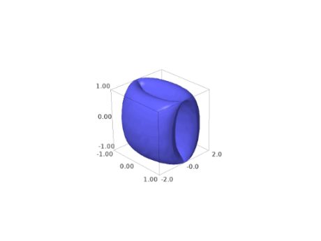
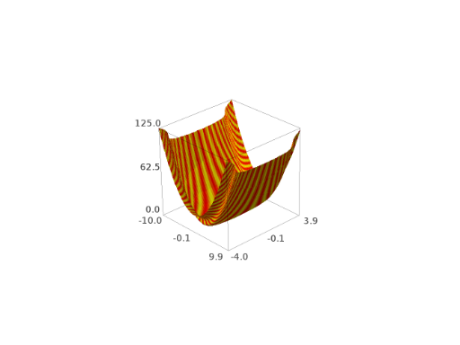
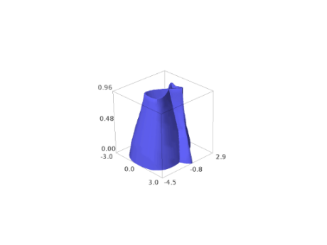
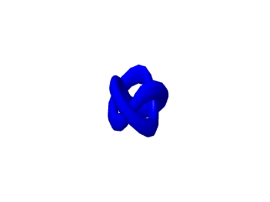
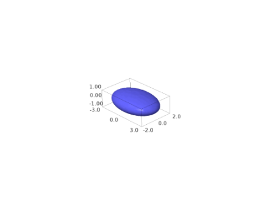
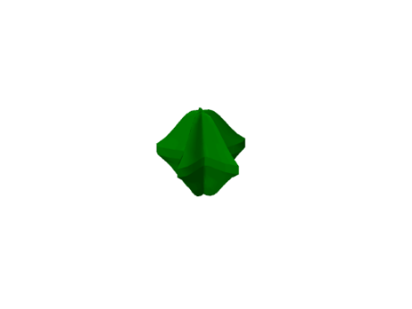

Parametric Plots¶
-
sage.plot.plot3d.parametric_plot3d.parametric_plot3d(f, urange, vrange=None, plot_points='automatic', boundary_style=None, **kwds)¶ Return a parametric three-dimensional space curve or surface.
There are four ways to call this function:
parametric_plot3d([f_x, f_y, f_z], (u_min, u_max)): \(f_x, f_y, f_z\) are three functions and \(u_{\min}\) and \(u_{\max}\) are real numbersparametric_plot3d([f_x, f_y, f_z], (u, u_min, u_max)): \(f_x, f_y, f_z\) can be viewed as functions of \(u\)parametric_plot3d([f_x, f_y, f_z], (u_min, u_max), (v_min, v_max)): \(f_x, f_y, f_z\) are each functions of two variablesparametric_plot3d([f_x, f_y, f_z], (u, u_min, u_max), (v, v_min, v_max)): \(f_x, f_y, f_z\) can be viewed as functions of \(u\) and \(v\)
INPUT:
f- a 3-tuple of functions or expressions, or vector of size 3urange- a 2-tuple (u_min, u_max) or a 3-tuple (u, u_min, u_max)vrange- (optional - only used for surfaces) a 2-tuple (v_min, v_max) or a 3-tuple (v, v_min, v_max)plot_points- (default: “automatic”, which is 75 for curves and [40,40] for surfaces) initial number of sample points in each parameter; an integer for a curve, and a pair of integers for a surface.boundary_style- (default: None, no boundary) a dict that describes how to draw the boundaries of regions by giving options that are passed to the line3d command.mesh- bool (default: False) whether to display mesh grid linesdots- bool (default: False) whether to display dots at mesh grid points
Note
- By default for a curve any points where \(f_x\), \(f_y\), or \(f_z\) do not evaluate to a real number are skipped.
- Currently for a surface \(f_x\), \(f_y\), and \(f_z\) have to be defined everywhere. This will change.
- mesh and dots are not supported when using the Tachyon ray tracer renderer.
EXAMPLES: We demonstrate each of the four ways to call this function.
A space curve defined by three functions of 1 variable:
sage: parametric_plot3d((sin, cos, lambda u: u/10), (0,20)) Graphics3d Object
Note above the lambda function, which creates a callable Python function that sends \(u\) to \(u/10\).
Next we draw the same plot as above, but using symbolic functions:
sage: u = var('u') sage: parametric_plot3d((sin(u), cos(u), u/10), (u,0,20)) Graphics3d Object

We draw a parametric surface using 3 Python functions (defined using lambda):
sage: f = (lambda u,v: cos(u), lambda u,v: sin(u)+cos(v), lambda u,v: sin(v)) sage: parametric_plot3d(f, (0,2*pi), (-pi,pi)) Graphics3d Object
The same surface, but where the defining functions are symbolic:
sage: u, v = var('u,v') sage: parametric_plot3d((cos(u), sin(u)+cos(v), sin(v)), (u,0,2*pi), (v,-pi,pi)) Graphics3d Object
The surface, but with a mesh:
sage: u, v = var('u,v') sage: parametric_plot3d((cos(u), sin(u)+cos(v), sin(v)), (u,0,2*pi), (v,-pi,pi), mesh=True) Graphics3d Object

We increase the number of plot points, and make the surface green and transparent:
sage: parametric_plot3d((cos(u), sin(u)+cos(v), sin(v)), (u,0,2*pi), (v,-pi,pi), ....: color='green', opacity=0.1, plot_points=[30,30]) Graphics3d Object
One can also color the surface using a coloring function and a colormap as follows. Note that the coloring function must take values in the interval [0,1].
sage: u,v = var('u,v') sage: def cf(u,v): return sin(u+v/2)**2 sage: P = parametric_plot3d((cos(u), sin(u)+cos(v), sin(v)), ....: (u,0,2*pi), (v,-pi,pi), color=(cf,colormaps.PiYG), plot_points=[60,60]) sage: P.show(viewer='tachyon')

Another example, a colored Möbius band:
sage: cm = colormaps.ocean sage: def c(x,y): return sin(x*y)**2 sage: from sage.plot.plot3d.parametric_surface import MoebiusStrip sage: MoebiusStrip(5, 1, plot_points=200, color=(c,cm)) Graphics3d Object

Yet another colored example:
sage: from sage.plot.plot3d.parametric_surface import ParametricSurface sage: cm = colormaps.autumn sage: def c(x,y): return sin(x*y)**2 sage: def g(x,y): return x, y+sin(y), x**2 + y**2 sage: ParametricSurface(g, (srange(-10,10,0.1), srange(-5,5.0,0.1)), color=(c,cm)) Graphics3d Object
Warning
This kind of coloring using a colormap can be visualized using Jmol, Tachyon (option
viewer='tachyon') and Canvas3D (optionviewer='canvas3d'in the notebook).We call the space curve function but with polynomials instead of symbolic variables.
sage: R.<t> = RDF[] sage: parametric_plot3d((t, t^2, t^3), (t,0,3)) Graphics3d Object

Next we plot the same curve, but because we use (0, 3) instead of (t, 0, 3), each polynomial is viewed as a callable function of one variable:
sage: parametric_plot3d((t, t^2, t^3), (0,3)) Graphics3d Object

We do a plot but mix a symbolic input, and an integer:
sage: t = var('t') sage: parametric_plot3d((1, sin(t), cos(t)), (t,0,3)) Graphics3d Object
We specify a boundary style to show us the values of the function at its extrema:
sage: u, v = var('u,v') sage: parametric_plot3d((cos(u), sin(u)+cos(v), sin(v)), (u,0,pi), (v,0,pi), ....: boundary_style={"color": "black", "thickness": 2}) Graphics3d Object

We can plot vectors:
sage: x,y = var('x,y') sage: parametric_plot3d(vector([x-y, x*y, x*cos(y)]), (x,0,2), (y,0,2)) Graphics3d Object
sage: t = var('t') sage: p = vector([1,2,3]) sage: q = vector([2,-1,2]) sage: parametric_plot3d(p*t+q, (t,0,2)) Graphics3d Object

Any options you would normally use to specify the appearance of a curve are valid as entries in the
boundary_styledict.MANY MORE EXAMPLES:
We plot two interlinked tori:
sage: u, v = var('u,v') sage: f1 = (4+(3+cos(v))*sin(u), 4+(3+cos(v))*cos(u), 4+sin(v)) sage: f2 = (8+(3+cos(v))*cos(u), 3+sin(v), 4+(3+cos(v))*sin(u)) sage: p1 = parametric_plot3d(f1, (u,0,2*pi), (v,0,2*pi), texture="red") sage: p2 = parametric_plot3d(f2, (u,0,2*pi), (v,0,2*pi), texture="blue") sage: p1 + p2 Graphics3d Object

A cylindrical Star of David:
sage: u,v = var('u v') sage: K = (abs(cos(u))^200+abs(sin(u))^200)^(-1.0/200) sage: f_x = cos(u) * cos(v) * (abs(cos(3*v/4))^500+abs(sin(3*v/4))^500)^(-1/260) * K sage: f_y = cos(u) * sin(v) * (abs(cos(3*v/4))^500+abs(sin(3*v/4))^500)^(-1/260) * K sage: f_z = sin(u) * K sage: parametric_plot3d([f_x, f_y, f_z], (u, -pi, pi), (v, 0, 2*pi)) Graphics3d Object

Double heart:
sage: u, v = var('u,v') sage: G1 = abs(sqrt(2)*tanh((u/sqrt(2)))) sage: G2 = abs(sqrt(2)*tanh((v/sqrt(2)))) sage: f_x = (abs(v) - abs(u) - G1 + G2)*sin(v) sage: f_y = (abs(v) - abs(u) - G1 - G2)*cos(v) sage: f_z = sin(u)*(abs(cos(u)) + abs(sin(u)))^(-1) sage: parametric_plot3d([f_x, f_y, f_z], (u,0,pi), (v,-pi,pi)) Graphics3d Object
Heart:
sage: u, v = var('u,v') sage: f_x = cos(u)*(4*sqrt(1-v^2)*sin(abs(u))^abs(u)) sage: f_y = sin(u)*(4*sqrt(1-v^2)*sin(abs(u))^abs(u)) sage: f_z = v sage: parametric_plot3d([f_x, f_y, f_z], (u,-pi,pi), (v,-1,1), frame=False, color="red") Graphics3d Object
A Trefoil knot (Wikipedia article Trefoil_knot):
sage: u, v = var('u,v') sage: f_x = (4*(1+0.25*sin(3*v))+cos(u))*cos(2*v) sage: f_y = (4*(1+0.25*sin(3*v))+cos(u))*sin(2*v) sage: f_z = sin(u)+2*cos(3*v) sage: parametric_plot3d([f_x, f_y, f_z], (u,-pi,pi), (v,-pi,pi), frame=False, color="blue") Graphics3d Object
Green bowtie:
sage: u, v = var('u,v') sage: f_x = sin(u) / (sqrt(2) + sin(v)) sage: f_y = sin(u) / (sqrt(2) + cos(v)) sage: f_z = cos(u) / (1 + sqrt(2)) sage: parametric_plot3d([f_x, f_y, f_z], (u,-pi,pi), (v,-pi,pi), frame=False, color="green") Graphics3d Object

Boy’s surface (Wikipedia article Boy’s_surface and https://mathcurve.com/surfaces/boy/boy.shtml):
sage: u, v = var('u,v') sage: K = cos(u) / (sqrt(2) - cos(2*u)*sin(3*v)) sage: f_x = K * (cos(u)*cos(2*v)+sqrt(2)*sin(u)*cos(v)) sage: f_y = K * (cos(u)*sin(2*v)-sqrt(2)*sin(u)*sin(v)) sage: f_z = 3 * K * cos(u) sage: parametric_plot3d([f_x, f_y, f_z], (u,-2*pi,2*pi), (v,0,pi), ....: plot_points=[90,90], frame=False, color="orange") # long time -- about 30 seconds Graphics3d Object

Maeder’s Owl also known as Bour’s minimal surface (Wikipedia article Bour%27s_minimal_surface):
sage: u, v = var('u,v') sage: f_x = v*cos(u) - 0.5*v^2*cos(2*u) sage: f_y = -v*sin(u) - 0.5*v^2*sin(2*u) sage: f_z = 4 * v^1.5 * cos(3*u/2) / 3 sage: parametric_plot3d([f_x, f_y, f_z], (u,-2*pi,2*pi), (v,0,1), ....: plot_points=[90,90], frame=False, color="purple") Graphics3d Object

Bracelet:
sage: u, v = var('u,v') sage: f_x = (2 + 0.2*sin(2*pi*u))*sin(pi*v) sage: f_y = 0.2 * cos(2*pi*u) * 3 * cos(2*pi*v) sage: f_z = (2 + 0.2*sin(2*pi*u))*cos(pi*v) sage: parametric_plot3d([f_x, f_y, f_z], (u,0,pi/2), (v,0,3*pi/4), frame=False, color="gray") Graphics3d Object
Green goblet:
sage: u, v = var('u,v') sage: f_x = cos(u) * cos(2*v) sage: f_y = sin(u) * cos(2*v) sage: f_z = sin(v) sage: parametric_plot3d([f_x, f_y, f_z], (u,0,2*pi), (v,0,pi), frame=False, color="green") Graphics3d Object
Funny folded surface - with square projection:
sage: u, v = var('u,v') sage: f_x = cos(u) * sin(2*v) sage: f_y = sin(u) * cos(2*v) sage: f_z = sin(v) sage: parametric_plot3d([f_x, f_y, f_z], (u,0,2*pi), (v,0,2*pi), frame=False, color="green") Graphics3d Object
Surface of revolution of figure 8:
sage: u, v = var('u,v') sage: f_x = cos(u) * sin(2*v) sage: f_y = sin(u) * sin(2*v) sage: f_z = sin(v) sage: parametric_plot3d([f_x, f_y, f_z], (u,0,2*pi), (v,0,2*pi), frame=False, color="green") Graphics3d Object
Yellow Whitney’s umbrella (Wikipedia article Whitney_umbrella):
sage: u, v = var('u,v') sage: f_x = u*v sage: f_y = u sage: f_z = v^2 sage: parametric_plot3d([f_x, f_y, f_z], (u,-1,1), (v,-1,1), frame=False, color="yellow") Graphics3d Object
Cross cap (Wikipedia article Cross-cap):
sage: u, v = var('u,v') sage: f_x = (1+cos(v)) * cos(u) sage: f_y = (1+cos(v)) * sin(u) sage: f_z = -tanh((2/3)*(u-pi)) * sin(v) sage: parametric_plot3d([f_x, f_y, f_z], (u,0,2*pi), (v,0,2*pi), frame=False, color="red") Graphics3d Object

Twisted torus:
sage: u, v = var('u,v') sage: f_x = (3+sin(v)+cos(u)) * cos(2*v) sage: f_y = (3+sin(v)+cos(u)) * sin(2*v) sage: f_z = sin(u) + 2*cos(v) sage: parametric_plot3d([f_x, f_y, f_z], (u,0,2*pi), (v,0,2*pi), frame=False, color="red") Graphics3d Object

Four intersecting discs:
sage: u, v = var('u,v') sage: f_x = v*cos(u) - 0.5*v^2*cos(2*u) sage: f_y = -v*sin(u) - 0.5*v^2*sin(2*u) sage: f_z = 4 * v^1.5 * cos(3*u/2) / 3 sage: parametric_plot3d([f_x, f_y, f_z], (u,0,4*pi), (v,0,2*pi), frame=False, color="red", opacity=0.7) Graphics3d Object

Steiner surface/Roman’s surface (see Wikipedia article Roman_surface and Wikipedia article Steiner_surface):
sage: u, v = var('u,v') sage: f_x = (sin(2*u) * cos(v) * cos(v)) sage: f_y = (sin(u) * sin(2*v)) sage: f_z = (cos(u) * sin(2*v)) sage: parametric_plot3d([f_x, f_y, f_z], (u,-pi/2,pi/2), (v,-pi/2,pi/2), frame=False, color="red") Graphics3d Object

Klein bottle? (see Wikipedia article Klein_bottle):
sage: u, v = var('u,v') sage: f_x = (3*(1+sin(v)) + 2*(1-cos(v)/2)*cos(u)) * cos(v) sage: f_y = (4+2*(1-cos(v)/2)*cos(u)) * sin(v) sage: f_z = -2 * (1-cos(v)/2) * sin(u) sage: parametric_plot3d([f_x, f_y, f_z], (u,0,2*pi), (v,0,2*pi), frame=False, color="green") Graphics3d Object
A Figure 8 embedding of the Klein bottle (see Wikipedia article Klein_bottle):
sage: u, v = var('u,v') sage: f_x = (2+cos(v/2)*sin(u)-sin(v/2)*sin(2*u)) * cos(v) sage: f_y = (2+cos(v/2)*sin(u)-sin(v/2)*sin(2*u)) * sin(v) sage: f_z = sin(v/2)*sin(u) + cos(v/2)*sin(2*u) sage: parametric_plot3d([f_x, f_y, f_z], (u,0,2*pi), (v,0,2*pi), frame=False, color="red") Graphics3d Object

Enneper’s surface (see Wikipedia article Enneper_surface):
sage: u, v = var('u,v') sage: f_x = u - u^3/3 + u*v^2 sage: f_y = v - v^3/3 + v*u^2 sage: f_z = u^2 - v^2 sage: parametric_plot3d([f_x, f_y, f_z], (u,-2,2), (v,-2,2), frame=False, color="red") Graphics3d Object
Henneberg’s surface (see http://xahlee.org/surface/gallery_m.html):
sage: u, v = var('u,v') sage: f_x = 2*sinh(u)*cos(v) - (2/3)*sinh(3*u)*cos(3*v) sage: f_y = 2*sinh(u)*sin(v) + (2/3)*sinh(3*u)*sin(3*v) sage: f_z = 2 * cosh(2*u) * cos(2*v) sage: parametric_plot3d([f_x, f_y, f_z], (u,-1,1), (v,-pi/2,pi/2), frame=False, color="red") Graphics3d Object
Dini’s spiral:
sage: u, v = var('u,v') sage: f_x = cos(u) * sin(v) sage: f_y = sin(u) * sin(v) sage: f_z = (cos(v)+log(tan(v/2))) + 0.2*u sage: parametric_plot3d([f_x, f_y, f_z], (u,0,12.4), (v,0.1,2), frame=False, color="red") Graphics3d Object

Catalan’s surface (see http://xahlee.org/surface/catalan/catalan.html):
sage: u, v = var('u,v') sage: f_x = u - sin(u)*cosh(v) sage: f_y = 1 - cos(u)*cosh(v) sage: f_z = 4 * sin(1/2*u) * sinh(v/2) sage: parametric_plot3d([f_x, f_y, f_z], (u,-pi,3*pi), (v,-2,2), frame=False, color="red") Graphics3d Object
A Conchoid:
sage: u, v = var('u,v') sage: k = 1.2; k_2 = 1.2; a = 1.5 sage: f = (k^u*(1+cos(v))*cos(u), k^u*(1+cos(v))*sin(u), k^u*sin(v)-a*k_2^u) sage: parametric_plot3d(f, (u,0,6*pi), (v,0,2*pi), plot_points=[40,40], texture=(0,0.5,0)) Graphics3d Object
A Möbius strip:
sage: u,v = var("u,v") sage: parametric_plot3d([cos(u)*(1+v*cos(u/2)), sin(u)*(1+v*cos(u/2)), 0.2*v*sin(u/2)], ....: (u,0, 4*pi+0.5), (v,0, 0.3), plot_points=[50,50]) Graphics3d Object

A Twisted Ribbon:
sage: u, v = var('u,v') sage: parametric_plot3d([3*sin(u)*cos(v), 3*sin(u)*sin(v), cos(v)], ....: (u,0,2*pi), (v,0,pi), plot_points=[50,50]) Graphics3d Object
An Ellipsoid:
sage: u, v = var('u,v') sage: parametric_plot3d([3*sin(u)*cos(v), 2*sin(u)*sin(v), cos(u)], ....: (u,0, 2*pi), (v, 0, 2*pi), plot_points=[50,50], aspect_ratio=[1,1,1]) Graphics3d Object
A Cone:
sage: u, v = var('u,v') sage: parametric_plot3d([u*cos(v), u*sin(v), u], (u,-1,1), (v,0,2*pi+0.5), plot_points=[50,50]) Graphics3d Object
A Paraboloid:
sage: u, v = var('u,v') sage: parametric_plot3d([u*cos(v), u*sin(v), u^2], (u,0,1), (v,0,2*pi+0.4), plot_points=[50,50]) Graphics3d Object

A Hyperboloid:
sage: u, v = var('u,v') sage: plot3d(u^2-v^2, (u,-1,1), (v,-1,1), plot_points=[50,50]) Graphics3d Object

A weird looking surface - like a Möbius band but also an O:
sage: u, v = var('u,v') sage: parametric_plot3d([sin(u)*cos(u)*log(u^2)*sin(v), (u^2)^(1/6)*(cos(u)^2)^(1/4)*cos(v), sin(v)], ....: (u,0.001,1), (v,-pi,pi+0.2), plot_points=[50,50]) Graphics3d Object

A heart, but not a cardioid (for my wife):
sage: u, v = var('u,v') sage: p1 = parametric_plot3d([sin(u)*cos(u)*log(u^2)*v*(1-v)/2, ((u^6)^(1/20)*(cos(u)^2)^(1/4)-1/2)*v*(1-v), v^(0.5)], ....: (u,0.001,1), (v,0,1), plot_points=[70,70], color='red') sage: p2 = parametric_plot3d([-sin(u)*cos(u)*log(u^2)*v*(1-v)/2, ((u^6)^(1/20)*(cos(u)^2)^(1/4)-1/2)*v*(1-v), v^(0.5)], ....: (u, 0.001,1), (v,0,1), plot_points=[70,70], color='red') sage: show(p1+p2)

A Hyperhelicoidal:
sage: u = var("u") sage: v = var("v") sage: f_x = (sinh(v)*cos(3*u)) / (1+cosh(u)*cosh(v)) sage: f_y = (sinh(v)*sin(3*u)) / (1+cosh(u)*cosh(v)) sage: f_z = (cosh(v)*sinh(u)) / (1+cosh(u)*cosh(v)) sage: parametric_plot3d([f_x, f_y, f_z], (u,-pi,pi), (v,-pi,pi), plot_points=[50,50], frame=False, color="red") Graphics3d Object
A Helicoid (lines through a helix, Wikipedia article Helix):
sage: u, v = var('u,v') sage: f_x = sinh(v) * sin(u) sage: f_y = -sinh(v) * cos(u) sage: f_z = 3 * u sage: parametric_plot3d([f_x, f_y, f_z], (u,-pi,pi), (v,-pi,pi), plot_points=[50,50], frame=False, color="red") Graphics3d Object
Kuen’s surface (http://virtualmathmuseum.org/Surface/kuen/kuen.html):
sage: f_x = (2*(cos(u) + u*sin(u))*sin(v))/(1+ u^2*sin(v)^2) sage: f_y = (2*(sin(u) - u*cos(u))*sin(v))/(1+ u^2*sin(v)^2) sage: f_z = log(tan(1/2 *v)) + (2*cos(v))/(1+ u^2*sin(v)^2) sage: parametric_plot3d([f_x, f_y, f_z], (u,0,2*pi), (v,0.01,pi-0.01), plot_points=[50,50], frame=False, color="green") Graphics3d Object

A 5-pointed star:
sage: G1 = (abs(cos(u/4))^0.5+abs(sin(u/4))^0.5)^(-1/0.3) sage: G2 = (abs(cos(5*v/4))^1.7+abs(sin(5*v/4))^1.7)^(-1/0.1) sage: f_x = cos(u) * cos(v) * G1 * G2 sage: f_y = cos(u) * sin(v) * G1 * G2 sage: f_z = sin(u) * G1 sage: parametric_plot3d([f_x, f_y, f_z], (u,-pi/2,pi/2), (v,0,2*pi), plot_points=[50,50], frame=False, color="green") Graphics3d Object
A cool self-intersecting surface (Eppener surface?):
sage: f_x = u - u^3/3 + u*v^2 sage: f_y = v - v^3/3 + v*u^2 sage: f_z = u^2 - v^2 sage: parametric_plot3d([f_x, f_y, f_z], (u,-25,25), (v,-25,25), plot_points=[50,50], frame=False, color="green") Graphics3d Object

The breather surface (Wikipedia article Breather_surface):
sage: K = sqrt(0.84) sage: G = (0.4*((K*cosh(0.4*u))^2 + (0.4*sin(K*v))^2)) sage: f_x = (2*K*cosh(0.4*u)*(-(K*cos(v)*cos(K*v)) - sin(v)*sin(K*v)))/G sage: f_y = (2*K*cosh(0.4*u)*(-(K*sin(v)*cos(K*v)) + cos(v)*sin(K*v)))/G sage: f_z = -u + (2*0.84*cosh(0.4*u)*sinh(0.4*u))/G sage: parametric_plot3d([f_x, f_y, f_z], (u,-13.2,13.2), (v,-37.4,37.4), plot_points=[90,90], frame=False, color="green") Graphics3d Object